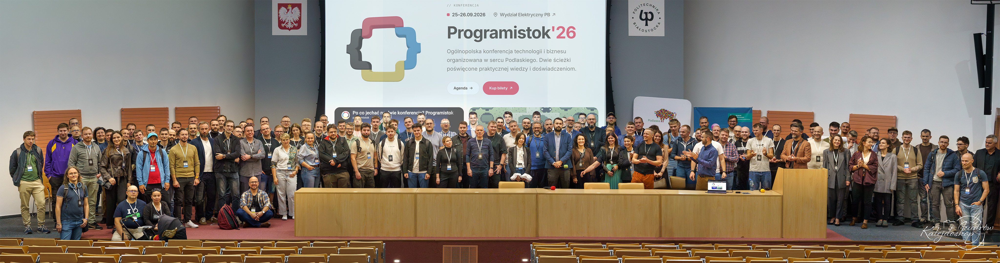

Oferta dla działu marketingu Pronar
Szkolenie
z agentów AI
Dwa dni u Was w firmie. Cztery moduły i praca na waszych potrzebach.
Robert Matyszewski · październik 2026
Prowadzący
Robert Matyszewski
menedżer IT oraz przedsiębiorca
W branży IT od 2012 roku, na styku technologii, produktu, sprzedaży i biznesu
LemonTea: zbudowałem agencję, sprzedaną w 2016 roku
Kierowałem sprzedażą i marketingiem w SoftwareHut i TenderHut
Pracowałem w Netguru i YourNextStore
Tworzyłem GraphQL Editor, używany przez dziesiątki tysięcy osób
Budowałem TeamFinder: sieć zespołów IT na potrzeby klientów
Współorganizator Programistoku od 10 lat
Honorowy Ambasador Politechniki Białostockiej
Dziś buduję własne rozwiązania z AI i pomagam budować prototypy
Pronar · szkolenie z agentów AI
02
Prowadzący
Co robię
Uczę specjalistów i menedżerów tworzenia agentów AI oraz oprogramowania.
Pronar · szkolenie z agentów AI
03

Prowadzący
Programistok 2026
25–26.09.2026 · Wydział Elektryczny Politechniki Białostockiej
Współorganizuję od 10 lat
Konferencja programistów w Białymstoku · programistok.org
Pronar · szkolenie z agentów AI
04
Po co to robimy
Mniej gaszenia pożarów,
więcej czasu na strategię.
Zebrałem Twoje potrzeby i potrzeby zespołu w jedną listę. Większość to powtarzalna praca wokół grafiki: teksty, redakcja kwartalnika, posty, szukanie plików. Tę robotę mogą przejąć agenci.
36
wasze potrzeby na liście
23
robimy na szkoleniu, w modułach 02–04
Pronar · szkolenie z agentów AI
05
Jak pracujemy
Robimy,
a nie słuchamy.
Każdy pracuje na swoim komputerze i na plikach Pronaru: artykułach z kwartalnika, postach, zdjęciach z banku. Wychodzicie z agentami, które działają u Was, a nie z notatkami.
Każdy moduł ma ten sam rytm
1
Krótki pokaz na prawdziwym przykładzie z Pronaru.
2
Ćwiczenie na Waszym materiale. To większość czasu.
3
Instrukcja krok po kroku, do której wracacie po szkoleniu.
Pronar · szkolenie z agentów AI
06
Plan szkolenia
Dwa dni, cztery moduły
Dzień 1 · 30 października
01
Od czatu do agenta
Podstawy: czym agent różni się od czatu, z czego się składa i jak z nim pracować.
02
Agenci do tekstów
Teksty, tłumaczenia, OCR, kwartalnik i posty. Agent, który sam pracuje na Waszych plikach.
Dzień 2 · 7 listopada
03
Wspólne bazy wiedzy z agentami
Kwartalniki, katalogi i dane o produktach jako baza, z której agent czerpie i do której zapisuje.
04
Marketing i projektowanie
Grafiki, layouty i formaty kampanii w spójnym stylu Pronaru.
Na później: 13 tematów na kolejny etap, gdy pierwsze agenty już będą działać.
Pronar · szkolenie z agentów AI
07
Moduł 01 · Dzień 1, 30 października
Od czatu do agenta
Wspólny fundament na całe szkolenie. Bez programowania pokazuję, czym agent różni się od czatu, z czego się składa i jak prowadzić z nim pracę na co dzień.
Na bazie mojego szkolenia „AI dla menedżerów: od czatu do własnego agenta AI”
Czat odpowiada, agent wykonuje: na czym polega różnica
Czym jest agent: model + cel + kontekst + narzędzia
Kiedy agent, a kiedy zwykły program
Z czego składa się agent: pliki z instrukcjami i skille
Claude i Codex w praktyce: projekt, przeglądarka, wtyczki, uprawnienia i dane
Jak prowadzić pracę z agentem: plan, wykonanie, poprawki, sprawdzanie
Od jednorazowego polecenia do skilla i automatyzacji
Pronar · szkolenie z agentów AI
08
Moduł 02 · Dzień 1, 30 października
Agenci do tekstów
Zaczynamy od tego, co dziś robicie ręcznie w czacie. Kończymy na agencie, który sam bierze plik z folderu, pracuje według Waszych wytycznych i zapisuje wynik.
Poprawa stylistyczna i ortograficzna tekstów
Tłumaczenia
Odczytywanie tekstów ze zdjęć i skanów (OCR)
Kwartalnik: sprawdzanie błędów merytorycznych
Kwartalnik: autor przysyła tylko wkład merytoryczny, agent pisze z niego artykuł
Social media: planowanie treści
Social media: pisanie tekstów postów
Transkrypcja nagrań
Usprawnienie wyszukiwania w bankach zdjęć
Pronar · szkolenie z agentów AI
09
Moduł 03 · Dzień 2, 7 listopada
Wspólne bazy wiedzy z agentami
Agent jest tak dobry, jak pliki, które dostaje. Układamy kwartalniki, katalogi i dane o produktach tak, żeby agent je znalazł i z nich korzystał.
Teksty do katalogów z istniejących materiałów, np. z kwartalnika
Kwartalnik: przeredagowanie artykułów pod styl kwartalnika
Kwartalnik: sprawdzanie, czy temat już był we wcześniejszych numerach
Kwartalnik: agent bierze artykuł z folderu, przerabia według wytycznych i zapisuje
Szybsze wyszukiwanie w dużych bazach zdjęć, filmów i artykułów
Agent porządkujący informacje o produktach: braki materiałów, porównanie źródeł, zestawienia i listy zadań
Interaktywne strony produktowe według ustalonego formatu
Pronar · szkolenie z agentów AI
10
Moduł 04 · Dzień 2, 7 listopada
Marketing i projektowanie
Agent nie zastępuje grafika. Przejmuje powtarzalne składanie: szablony, warianty i formaty, zawsze w identyfikacji wizualnej Pronaru.
Automatyzacja projektowania kwartalnika
Proste grafiki do social mediów według stałego układu: zdjęcie, logo, tekst (Claude Design)
Firmowe zasoby i dotychczasowe projekty jako baza nowych materiałów w spójnym stylu
Generowanie i modyfikowanie obrazów zgodnie z identyfikacją wizualną
Grafiki wektorowe i odtwarzanie projektów z wydruków
Pomysły, koncepcje wizualne i layouty
Dopasowanie grafiki do wielu formatów pod kampanie Google
Pronar · szkolenie z agentów AI
11
Kolejny etap
Na później
Tych 13 tematów nie zmieścimy w dwa dni. Wracamy do nich na kolejnym spotkaniu albo przy wdrożeniu, gdy pierwsze agenty już będą działać.
Proste animacje na Facebooka
Skrypty do InDesigna i Blendera
Skrypty do Photoshopa modyfikujące rendery
Wyszukiwanie dodatków do Blendera
Formatowanie akapitów i tabele w InDesignie, Illustratorze i Corelu
Szablony graficzne: zdjęcie + tekst + logo
Leady ze skrzynki marketingowej
Wirtualny asystent klienta na stronie
Hasła reklamowe i treści do publikacji
Szparowanie obiektów i rozszerzanie tła
Dodawanie elementów do zdjęć, fotomontaże
Obracające się modele maszyn ze zdjęć (Vizcom, Kling)
Obróbka audio
Pronar · szkolenie z agentów AI
12
Oferta
Szkolenie i instrukcje w jednej usłudze
Forma
Szkolenie praktyczne u Was w Pronarze, dwa dni: 30 października i 7 listopada
Uczestnicy
Zespół marketingu: [liczba osób]
Program
Moduły 01–04: podstawy pracy z agentem i 23 tematy z Waszej listy
W cenie
Instrukcje krok po kroku do każdego agenta, którego zbudujemy
Cena
8 000 zł netto
za dwa dni (2 × 4 000 zł)
Płatność
Kartą służbową na stronie z ofertą, faktura VAT
Pronar · szkolenie z agentów AI
13
Przygotowanie
Co przygotować przed szkoleniem
Materiały
Wytyczne redakcyjne kwartalnika albo prompty, których już używacie
3–5 artykułów w wersji przed redakcją i po niej
2–3 ostatnie numery kwartalnika w PDF albo Wordzie
Jeden folder z banku zdjęć jako próbka
Opis marki i kilka przykładowych postów
Sprzęt i dostęp
Laptop dla każdego uczestnika
Możliwość instalacji narzędzi na służbowych komputerach
Dostęp do narzędzi AI z sieci firmowej – sprawdzimy go przed szkoleniem
Informacja, jakie plany mają Wasze konta OpenAI
Pronar · szkolenie z agentów AI
14
Pierwszy krok
Zaczynamy
od kwartalnika
Pierwszy agent bierze artykuł z folderu, redaguje go według Waszych wytycznych i zapisuje do akceptacji. Na tym schemacie budujemy resztę szkolenia.
Potwierdźmy listę uczestników → [e-mail / telefon]
Robert Matyszewski · październik 2026